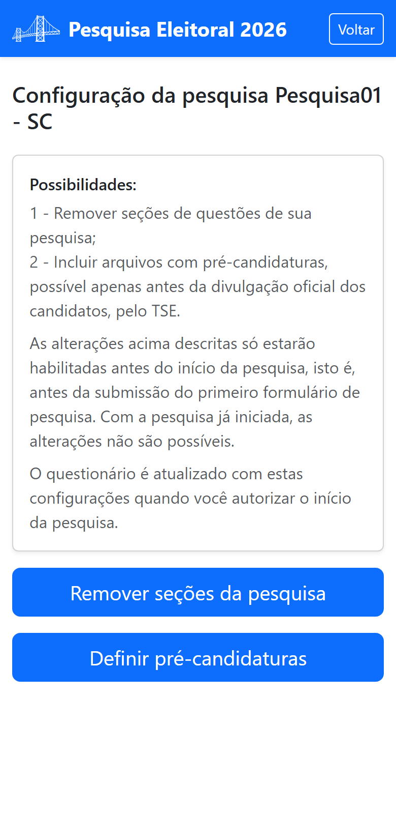
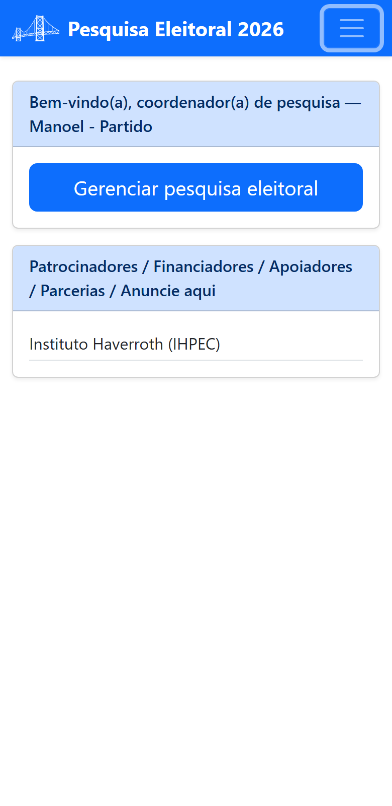
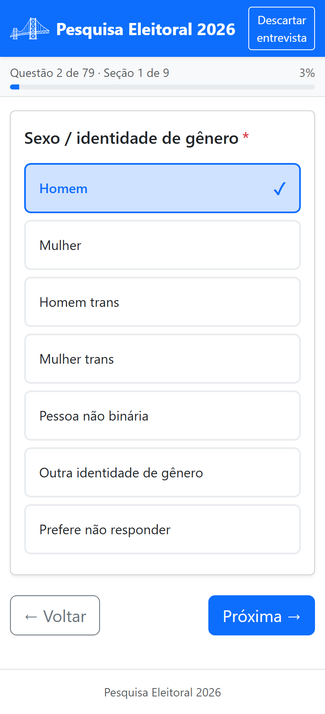

🤝
ONGs
Ouça comunidades e mapeie opinião pública com transparência e método próprio.
Plataforma de pesquisa eleitoral
Uma ferramenta de apoio para quem quer conduzir a própria pesquisa — do questionário ao campo — e acompanhar os resultados em tempo real. Para ONGs, partidos políticos, empresas e pessoas físicas.
Comece pelo modo de avaliação e conheça a plataforma antes de adquirir entrevistas.

Para quem é
Qualquer organização ou pessoa pode planejar, aplicar e analisar sua própria pesquisa.
Ouça comunidades e mapeie opinião pública com transparência e método próprio.
Acompanhe cenários eleitorais, teste pré-candidaturas e oriente estratégias.
Institutos e consultorias conduzem pesquisas para seus clientes na mesma plataforma.
Pesquisadores independentes realizam levantamentos sem precisar de estrutura própria.

Ferramenta de apoio
Você monta o levantamento do seu jeito e a plataforma cuida da operação:
Resultados em tempo real
À medida que os entrevistadores enviam as respostas do campo, os números se atualizam. Acompanhe a pesquisa completa, uma seção ou uma questão específica — e gere relatórios quando precisar.
Como funciona
Da concepção ao campo, cada pessoa cuida da sua parte.


Recursos
79 questões em 9 seções, prontas como referência e ajustáveis à sua pesquisa.
Interface mobile-first: o campo é aplicado no telefone, sem complicação.
Coordene mais de uma pesquisa ao mesmo tempo, ou em UFs e períodos distintos.
Divida a pesquisa em segmentos e organize distribuição e resultados por recorte.
Seleção de localidade integrada aos dados oficiais, sem digitação manual.
Reparta as entrevistas adquiridas entre entrevistadores e acompanhe o saldo.
Acompanhe ao vivo e gere relatórios por pesquisa, seção ou questão.
Experimente a plataforma com uma pesquisa de teste antes de adquirir entrevistas.
Registre o código do seu consultor e obtenha desconto na aquisição de entrevistas.
A coleta só começa quando você autoriza — com o questionário do seu jeito.
Conheça a plataforma agora — comece pelo modo de avaliação, sem compromisso.